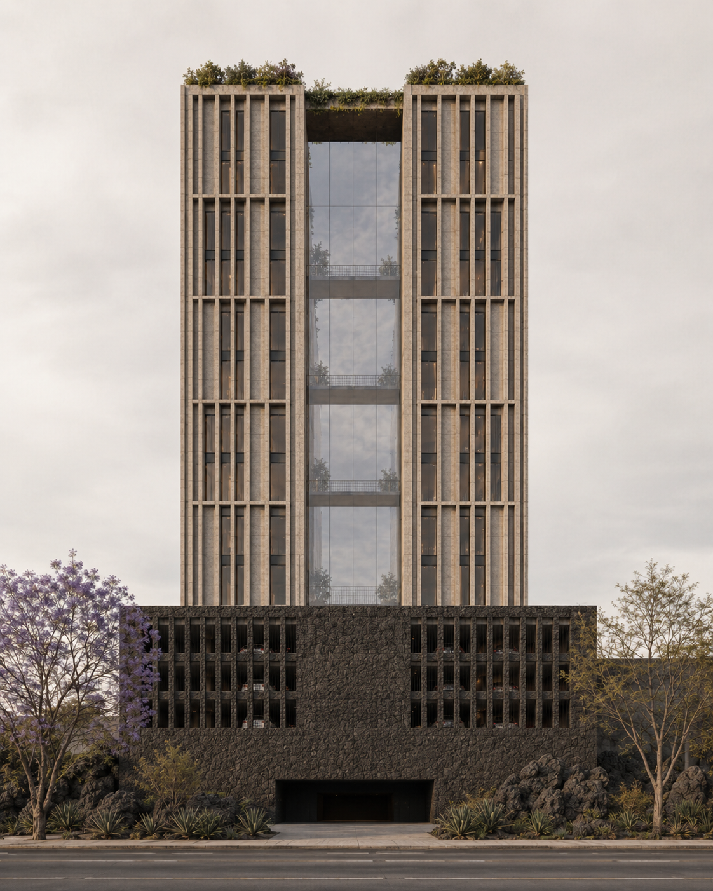
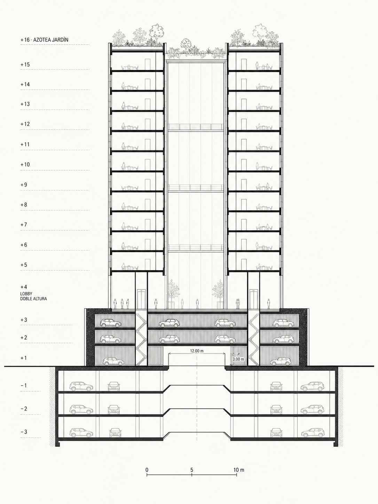
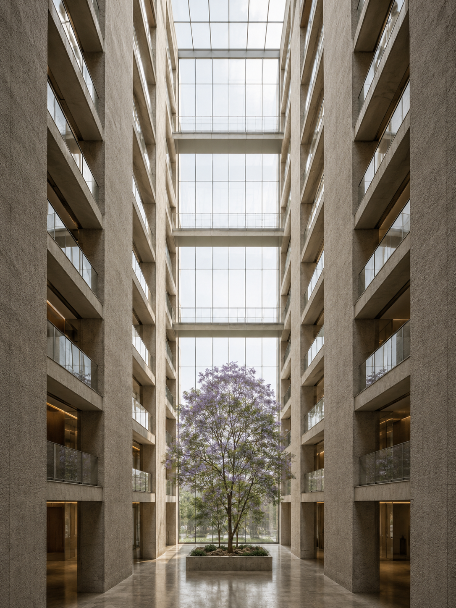
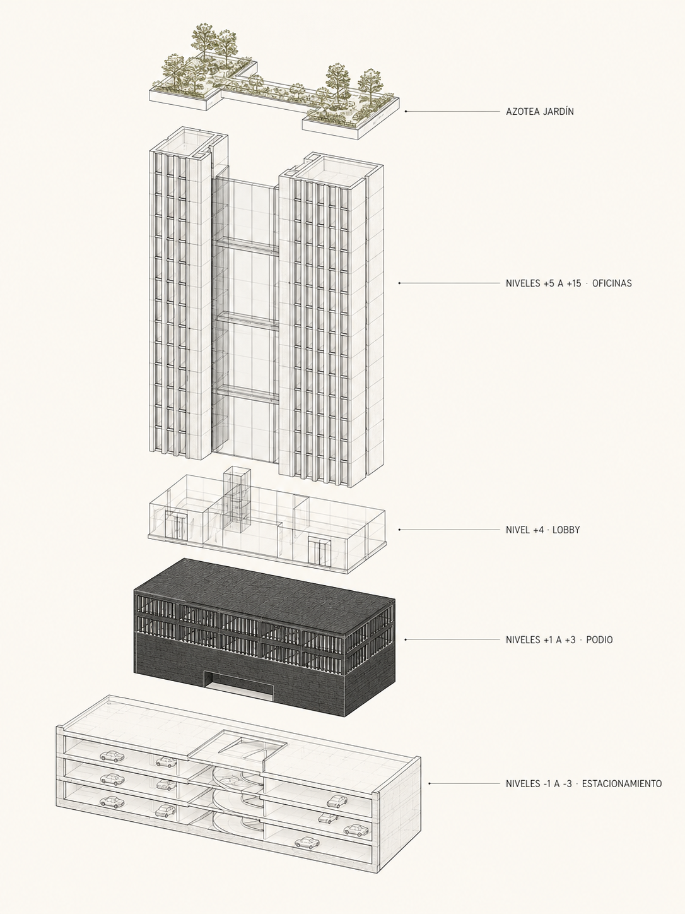

QUÁLITAS · SAN JERÓNIMO 492
Sede Corporativa · Jardines del Pedregal · Ciudad de México
Una grieta de luz custodiada por dos cuerpos de piedra

01 · Vista desde Av. San Jerónimo · Acceso principal

02 · Sección longitudinal · esc. 1:200

03 · Atrio central desde lobby

04 · Axonométrico explotado · sistema constructivo
Una envolvente que cuida lo que tiene dentro y honra lo que tiene afuera. Espalda muda al fraccionamiento, frente sereno a la avenida.
Materiales que envejecen con dignidad. Piedra basáltica del Pedregal, concreto cincelado, madera nacional. Activo patrimonial a cien años.
El edificio no agota su potencial. Cede al espacio público lo que la avenida necesita. Presencia sin estridencia.
Quálitas. La palabra latina que da nombre a la empresa. La ética que ordena todas las decisiones de proyecto.